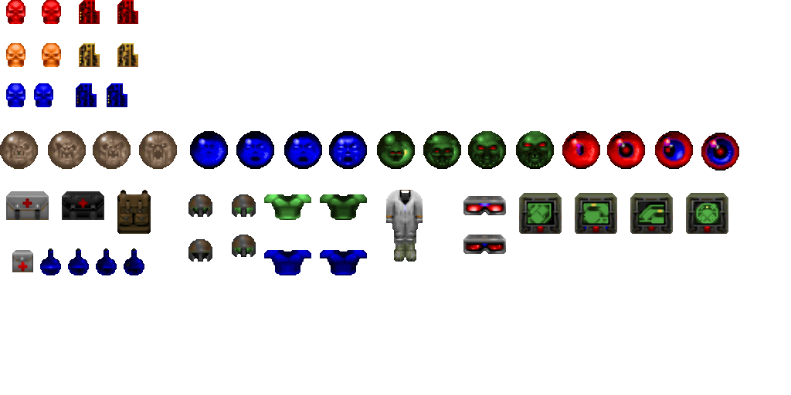

This section will talk about how to carefully limit the amount of health and ammo you give to the player
in order to provide a balanced challenge.
Introduction to items, explaining what each one does and when to use them.

The balancing of items and secrets.